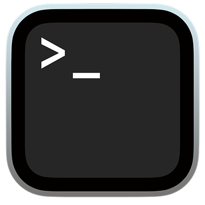

设置
退出
关闭
语言与技能
编程语言
选择你偏好的编程语言
C++
C
Python
Java
JavaScript
Go
Dart
当前技能
选择当前使用的技能方向
数据结构与算法
岗位与简历
岗位名称
例如「后端开发工程师」，让回答更贴合目标岗位
岗位 JD
简历（PDF）
上传
移除
尚未上传简历
回答时参考简历与 JD
关闭后，聊天和语音回答不会携带岗位与简历信息
简历仅在本地解析保存；提问时会随请求发送给 DeepSeek。首版仅支持可复制文字的 PDF，扫描件无法解析。
应用图标

终端
活动
设置
语音识别
音频输入源
麦克风：收录本机说话；系统音频：收录会议软件播放的声音（戴耳机时选这个）
麦克风
系统音频（会议声音）
语音回答目标
选择由语音生成的回答显示在哪里
聊天窗和悬浮窗
仅聊天窗
仅悬浮窗
豆包 API Key
新版控制台 API Key（推荐）。留空则使用下面的 APP ID + Access Token
APP ID
旧版控制台的 APP ID
Access Token
旧版控制台的 Access Token，与 APP ID 配套使用
资源 ID
与控制台开通的流式语音识别服务保持一致
流式语音识别 2.0 小时版（推荐）
流式语音识别 2.0 并发版
流式语音识别 1.0 小时版
流式语音识别 1.0 并发版
二遍识别
开启后会二次识别完整句子，准确率更高，句尾延迟略增
豆包语音在云端识别，需要联网，音频会上传至火山引擎。凭据会写回
.env
，重启后仍然保留。
DeepSeek 设置
DeepSeek API 密钥
调用 DeepSeek 模型使用的 API 密钥
窗口设置
窗口间距
绑定窗口之间的间距（像素）
回答透明度
回答面板与聊天窗背景的不透明度（0–100%）
40%